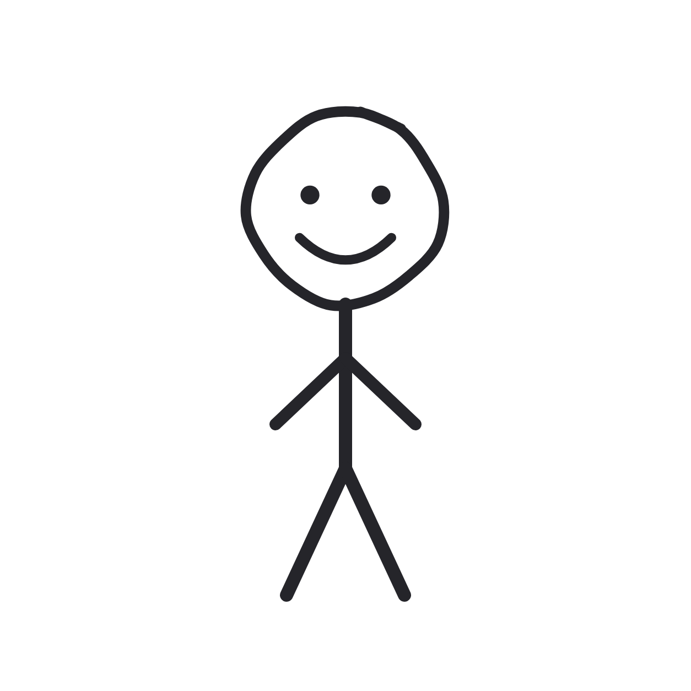

For college students
Finish your first things before the scroll starts.
Set a goal, break it into today's tasks, and check them off. Every task you finish earns a short break to spend on the apps that usually eat your day.

Built for the way students actually work
-
Goals, broken down
Turn a big goal like “pass my exam” into small tasks you can finish today.
-
Earn your breaks
Distracting apps stay paused until your first things are done. Then you earn time back.
-
Works anywhere
Install it on your phone like an app. It keeps working offline and syncs when you are back online.
How it works
- Add today's tasks. Start with one goal and let George suggest next steps.
- Check off your first things. Some tasks can ask for a quick photo as proof.
- Take a break. Finished tasks earn time on your distracting apps.
Admin sign in
Sign in to manage users, goals, and tasks.